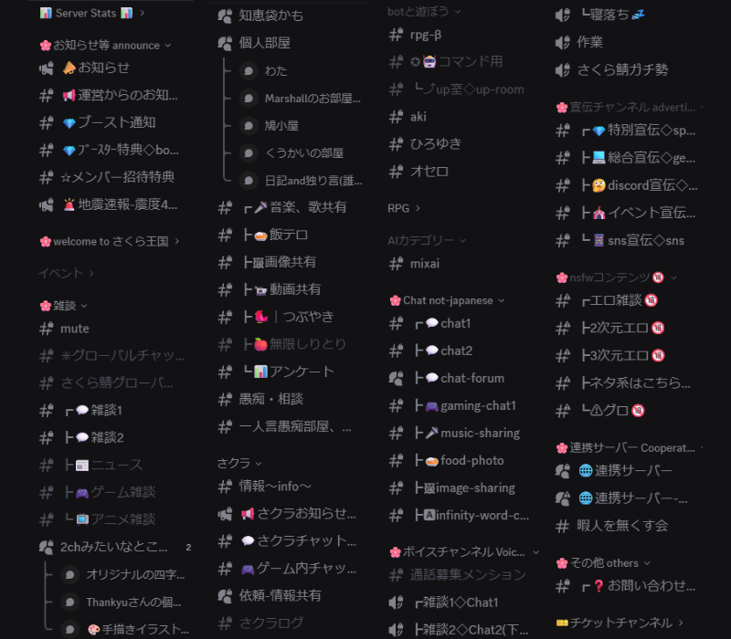
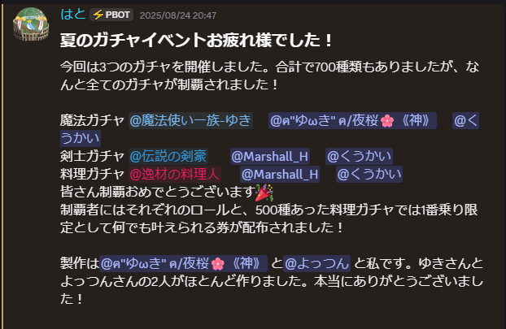
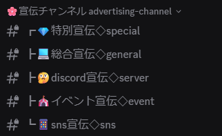

さくら雑談王国
1000人超えの大規模Discord雑談コミュニティ
さくら雑談王国のいいところ
-
多様なチャンネル
二つの雑談チャンネルをはじめ、ゲーム・アニメチャンネルや個人部屋など150+のチャンネルを完備。
好きなタイミングで好きなことを話せます。 -
たくさんのイベント
クリスマス、ハロウィン、お正月などの節目には「ガチャ」や「イラストグランプリ」、「写真選手権」を開催。
特にガチャは全制覇を目指して耐久VCをする人までいる人気イベントです! -
豊富な宣伝チャンネル
総合宣伝を中心としてdiscordサーバー専用の宣伝チャンネルや、イベント・SNS宣伝用のチャンネルを完備。
一定の条件を満たせば「特別宣伝」での宣伝も可能。
連携サーバー制度もあります。
お知らせ
お知らせを取得しています。。。
現在のサーバー状況
現在のメンバー数: 取得中...人
現在のオンライン数: 取得中...人
現在のVC: 取得中...人
※ botの状況により取得できない場合があります。Bot紹介
サーバーライフをサポートするBotたち。
-
SakuraBot
さくら雑談王国独自のbot。認証などを請け負います。
規約 プライバシーポリシー
開発者は副鯖主のわたあめえさんです。 -
その他bot
現在取得しています。。。
サーバールール
-
1. 荒らし行為・ハッキング行為・過度なメンションの禁止
サーバーの運営を妨げる行為、不正アクセスにつながる行為、または特定のメンバーへ大量のメンションを送るなどの迷惑行為は禁止です。 落ち着いたコミュニケーション環境を守るため、悪質な行為には厳格に対処します。
-
2. 暴言・誹謗中傷・不適切な発言の禁止
他者を傷つける発言、侮辱的な表現、過度に不快感を与える内容、公序良俗に反する発言は控えてください。 個々の感じ方を尊重し、公共の場として適切な言動を心がけてください。
-
3. 宣伝行為は指定カテゴリーのみ許可
他サーバーや外部サービスの宣伝は「宣伝カテゴリー」内のみで許可しています。 それ以外のチャンネルでの宣伝は禁止です。また、自作Botの導入申請は管理権限を持つメンバーのみ可能であり、 セキュリティの観点から無断でのBot追加は禁止しています。
-
4. 危険サイト・悪質ファイルの共有禁止
フィッシングサイト、ウイルスを含むファイル、その他危険性のあるデータの共有は禁止です。 不審なリンクを見かけた場合は、速やかに運営へ報告してください。
-
5. メンバーの引き抜き・無断勧誘の禁止
他コミュニティへの誘導を目的とした接触や、無断での勧誘行為は禁止しています。 サーバーの独立性と参加者の安心感を守るため、これらの行為には厳しく対処します。
-
6. 他サーバーや外部への迷惑行為の禁止
他サーバーや第三者に迷惑がかかる行為、トラブルの持ち込み、迷惑を拡大させる行動は禁止です。 インターネット上の基本的なマナー（ネチケット）を守り、節度ある利用を心がけてください。
-
7. アカウント移行やXP移行に関する申請は管理者へ
アカウント移行によって認証ができなくなった場合や、XP移行が必要な場合は、サーバー主または副サーバー主へ直接DMでご連絡ください。 個別の対応が必要となるため、公開チャンネルでの問い合わせは避けてください。
-
8. その他の問題行為への運営判断
上記に明記されていない行為であっても、状況に応じて運営が判断し、注意・警告・制限などの措置を取る場合があります。 コミュニティの安全と快適性維持のため、ご理解とご協力をお願いいたします。
皆が安心して利用するための基本的なルールです。詳細はサーバー内でご確認ください。
運営紹介
-

はと
鯖主。「はとあげ」などとして基本的にみんなに食べられています。
-

わたあめえ
副鯖主。SakuraBOTの開発者です。
-

志歩
-

架流さん
-

角砂糖
-

DLC
-
And so on...
（めんどくさくなっただけ）